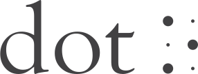
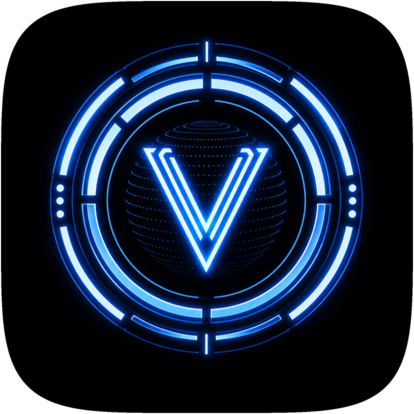
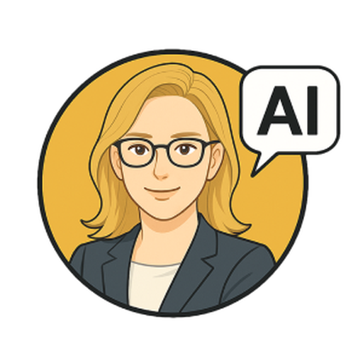
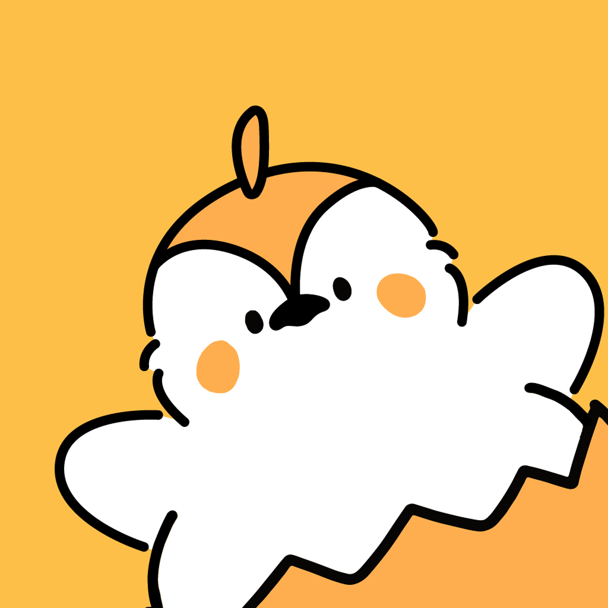
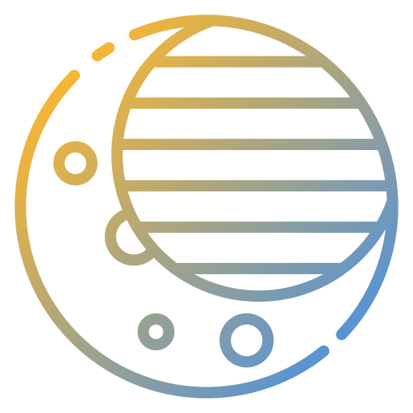

본문으로 건너뛰기
김원정
AI · 풀스택 엔지니어
시각장애인용 AI 에이전트를 Windows·macOS·Android에 베타 출시하고, 온디바이스 AI 앱과 RAG 백엔드, GPU 추론 서버를 개발했습니다. 가입 계정 2,000여 명의 초단기 아르바이트 매칭 서비스에서 백엔드 개발과 운영도 맡았습니다.

주식회사 닷
AI개발파트 · 2025.03–현재

AI 에이전트 · Windows·macOS·Android 베타
베로니카
파일·셸·브라우저·음성 도구로 웹 검색과 점자책 변환, 컴퓨터 조작을 돕는 AI 에이전트.
웹 작업 시간·토큰 65% 절감 · 의도 분류 지연 80% 단축
Python 에이전트 · Flutter 앱 · 도구 실행 · 웹 작업 재사용
PythonFluttermT5pgvector
발표 자료의 글과 이미지를 기기에서 분석해 음성과 점자로 전달하는 앱.
Microsoft Build 시연 기술 채택
VLM·SLM·OCR 분석 · GPU·NPU 추론 경로 전환
VLM / OCRONNX RuntimeGPU / NPU

점자 학습 앱 · Windows·macOS·iOS·Android
닷케인
숫자·점자 수업을 음성으로 진행하는 시각장애 학생용 학습 앱.
Vue·WinUI·Flutter 앱 · 음성 상태 관리 · 점자 디스플레이 연동
VueWinUIFlutterSTT / TTSBLE
AI 백엔드 · 추론 인프라
RAG · GPU 추론 서버
사내 문서 검색과 단일 L4 GPU의 다중 모델 서빙을 위한 백엔드.
이미지 생성 모델 메모리 약 20GB → 11GB
청킹·임베딩 선정·리랭킹 · 모델 양자화 · 동시 요청 제어
FastAPIpgvectorCeleryGCP
서비스 · 졸업 프로젝트

서비스 백엔드 · 2024.12–2026.03
깨알알바
단기 알바 모집과 지원, 근무 요청을 처리하는 서비스. 백엔드 개발과 운영을 맡았습니다.
가입 계정 2,021명 · 운영 근무지 1,779곳 · 앱스토어 평점 5.0 (2026.11 기준)
API 개발 · 배포 자동화 · 기능 개선
TypeScriptNestJSFirestoreGCP

졸업 프로젝트 · 2023.09–2024.06
DreamGuard
심전도와 코골이 녹음 파일로 수면무호흡 위험도를 분석하는 모바일 앱.
교내 소프트웨어창업경진대회 대상
데이터 전처리 · 모델 학습 · Flask API · AWS 배포
PyTorchFlaskAWSECG
기술 스택
- 언어
- PythonTypeScriptDartC#
- 앱
- FlutterVue 3WinUI 3WebView2
- 백엔드 · 데이터
- FastAPIFlaskNode.jsExpressNestJSPostgreSQLMySQLRedisCeleryFirestorePrisma
- AI
- PyTorchONNXHugging FaceVLM / SLMOCRRAGpgvector
- 인프라 · 플랫폼
- DockerGCPCloud SQLCloud FunctionsAWSGitHub ActionsPyInstallerBLENamed Pipe IPCWinML
학력
-
이화여자대학교
컴퓨터공학 학사 · GPA 3.80/4.30
-
EPITA, France
Visiting Student · Network, Security & AI coursework
논문 · 수상
-
시연 논문 공동저자 · 한국햅틱스학회
시각장애인의 프레젠테이션 슬라이드 접근성을 위한 On-Device AI 기반 시-촉각 변환 시스템
-
ICT 학점연계 프로젝트 인턴십 우수성과 대상
과학기술정보통신부 장관상
-
창업집중훈련 FLOW 최우수상
한국연구재단 · 깨알알바
-
제5회 소프트웨어창업경진대회 대상
이화여자대학교 · DreamGuard
시각장애 동료의 웹 이용을 돕기 위해 AI 에이전트 개발을 제안했습니다. 사용자의 요청에 따라 파일을 찾고, 셸 명령을 실행하고, 브라우저를 조작하는 앱으로, 웹 검색과 점자책 변환, 컴퓨터 조작(Computer Use)을 지원합니다.
문제와 역할
모든 요청을 LLM으로 처리하면 단순한 명령에도 응답이 늦어졌습니다. Python으로 에이전트를, Flutter로 앱을 개발하고, 요청의 복잡도에 따라 기기에서 처리하거나 클라우드 LLM에 보내도록 구현했습니다.
핵심 구현
- 웹 페이지 HTML에서 조작 가능한 요소와 변경 정보만 추려 에이전트에 전달하는 전처리를 구현했습니다. 이를 적용한 웹 작업에서 처리 시간과 토큰 사용량을 각각 약 30% 줄였습니다.
- 6,770건의 음성 명령 데이터로 mT5-small을 파인튜닝해 요청의 의도를 분류하도록 했습니다. LLM으로 분류할 때보다 분류에 걸리는 시간을 80% 줄였습니다.
- 단순 명령은 기기에서 처리하고, 복잡한 요청만 클라우드 LLM에 보내 평균 응답 시간을 50% 줄였습니다.
- 에이전트가 작업을 수행한 절차를 저장해 이후 요청에서도 다시 활용하도록 했습니다. 저장된 절차를 재사용한 작업은 첫 실행보다 처리 시간과 토큰 사용량이 각각 약 65% 줄었습니다.
배포
Windows·macOS·Android 베타 배포와 구독 관리, 자동 업데이트, CI/CD를 운영했습니다.
발표 자료의 글과 이미지를 분석해 음성과 점자로 전달하는 앱입니다.
설계 선택
사용자의 기기마다 GPU·NPU 구성이 달라 모델 실행 방식을 선택해야 했습니다. CUDA, QNN, DirectML을 순서대로 확인하고, 사용할 수 있는 방식으로 모델을 실행하도록 구현했습니다.
결과
Microsoft Build 시연 기술로 채택됐습니다. 관련 시연 논문(한국햅틱스학회, 2026)의 공동저자로 참여했습니다.
시각장애 학생이 음성 안내를 듣고 말로 답하며 숫자와 점자를 배우는 앱입니다. Windows·macOS·iOS·Android에 배포했습니다.
프론트엔드와 앱 패키징
Vue로 음성 제어와 학습 화면, AI 촉각 그래픽 변환 편집 화면을 포함한 프론트엔드 전반을 개발하고, WinUI·Flutter로 앱을 패키징했습니다.
음성 처리
- 사용자의 발화를 감지해 녹음을 시작·종료하고, 음성 인식과 음성 안내를 연결했습니다. 선택한 언어에 맞춰 음성을 처리하도록 구현했습니다.
- LLM이 응답을 만드는 동안 들어온 음성 입력과 음성 안내 중복 재생이 충돌하지 않도록 듣기·처리·응답 상태를 나눴습니다. 무음 구간에서 생기는 잘못된 전사는 VAD로 걸러냈습니다.
점자 디스플레이 연동
- BLE 기기 자동 스캔·재연결, 기기 전환, 연결 상태 음성 알림을 개발했습니다.
- 여러 앱이 점자 디스플레이 연결을 두고 충돌하던 문제를 공통 브로커와 앱 간 통신 구조로 해결했습니다.
- C#/WinRT로 구현된 점자 디스플레이 연결 기능을 Flutter 플랫폼 채널로 옮겨 Flutter 앱에서도 쓸 수 있게 했습니다.
초단기 아르바이트 매칭 서비스의 초기 기획에 참여하고, 백엔드 개발과 운영을 전담했습니다.
출시와 개선
- Node.js·TypeScript·Firestore·GCP 기반 서버와 Docker·GitHub Actions 배포 자동화를 구현했습니다.
- Cloud Functions로 가입·매장 등록·긴급호출 매칭 지표를 매일 집계하는 운영 대시보드를 만들고, 로깅·모니터링으로 기능별 사용 패턴 분석을 지원했습니다.
- 사용자 의견과 앱 재사용률을 확인하며 상권별 인력 추천, 평가, 알림 기능을 개발했습니다.
- 기능이 늘어나면서 서버를 기능별 모듈로 나누고, NestJS와 PostgreSQL로 전환했습니다.
결과
2026.11 기준 가입 계정 2,021명, 운영 근무지 1,779곳, 앱스토어 평점 5.0입니다. 2025 예비창업패키지에 선정됐고, 창업집중훈련 FLOW 최우수상(한국연구재단, 2025.02)을 받았습니다.
사내 문서를 검색하는 RAG 백엔드와, L4 GPU 한 대에서 여러 모델을 서빙하는 추론 서버를 개발했습니다.
RAG 백엔드
- PostgreSQL·pgvector 기반 사내 지식 RAG에 문서 청킹, 임베딩 모델 선정, 리랭킹을 적용해 검색 파이프라인을 구성했습니다.
- 문서 원문 조회 API, 발행·버전 관리, 공유 문서의 개인정보 자동 탐지·제거 기능을 개발했습니다.
GPU 추론 서버
- L4 GPU 한 대에서 텍스트 임베딩, 음성 인식, 이미지 생성, 배경 제거 모델 4종을 서빙했습니다.
- 이미지 생성 모델을 4비트 양자화해 메모리를 약 20GB에서 11GB로 줄였습니다.
- 동시 요청 상한과 HTTP 429·Retry-After 응답을 도입해, 요청이 몰릴 때 대기가 쌓이고 타임아웃이 연쇄로 나는 것을 막았습니다.
운영
FastAPI·Celery·Redis 기반으로 서버를 만들고, GCP 로드밸런싱과 로깅·모니터링, GitHub Actions 자동 배포를 구성했습니다.
ECG와 코골이 음성을 결합해 폐쇄성 수면무호흡 위험도를 산출하는 졸업 프로젝트입니다.
담당 범위
생체신호·음성 전처리 파이프라인, PyTorch 모델 학습, Flask 추론 API, 모바일 앱 파일 업로드 연동과 AWS 배포를 맡았습니다.
결과
제5회 이화여자대학교 소프트웨어창업경진대회 대상을 받았습니다.
앱 저장소 ↗
·
AI 저장소 ↗